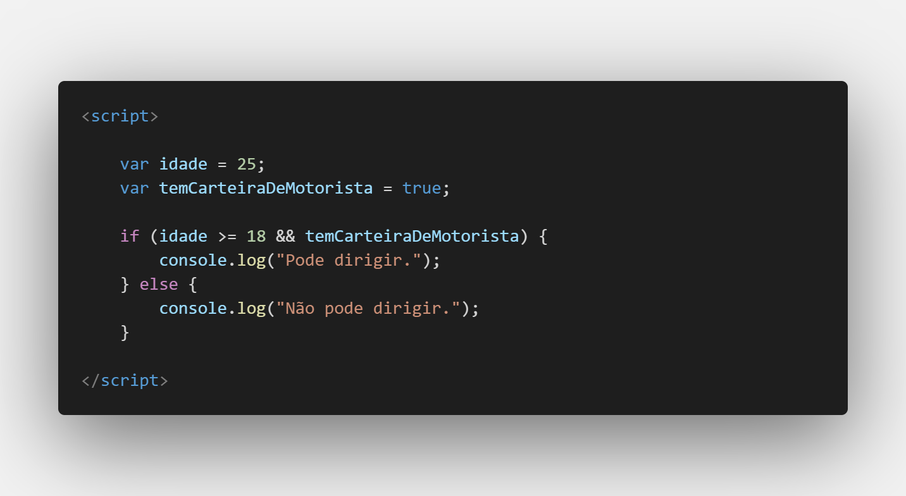

Aula 13.2 - Bônus, aprenda mais sobre && e ||
Os operadores lógicos && (E) e || (OU) são utilizados em JavaScript (e em muitas outras linguagens de programação) para combinar ou avaliar expressões booleanas (verdadeiras ou falsas) de maneira mais complexa. Eles são frequentemente usados em condicionais, loops e em situações onde é necessário tomar decisões baseadas em múltiplas condições.
Vamos explorar cada um desses operadores:
Operador && (E):
O operador && é usado para verificar se duas ou mais expressões são verdadeiras. Se todas as expressões forem verdadeiras, o resultado será verdadeiro; caso contrário, o resultado será falso.
Exemplo:

Nesse exemplo, o código verifica se a idade é maior ou igual a 18 e se a pessoa tem uma carteira de motorista. Ambas as condições devem ser verdadeiras para que a mensagem "Pode dirigir." seja exibida.
Operador || (OU):
O operador || é usado para verificar se pelo menos uma das expressões é verdadeira. Se pelo menos uma expressão for verdadeira, o resultado será verdadeiro; somente se todas as expressões forem falsas, o resultado será falso.
Exemplo:
Nesse exemplo, o código verifica se a pessoa tem experiência ou se tem um certificado. Se pelo menos uma das condições for verdadeira, a mensagem "Pode se candidatar ao emprego." será exibida.
Esses operadores lógicos podem ser usados em expressões mais complexas e aninhadas para avaliar várias condições de uma só vez. Eles desempenham um papel fundamental na construção de lógica condicional mais elaborada em programação.